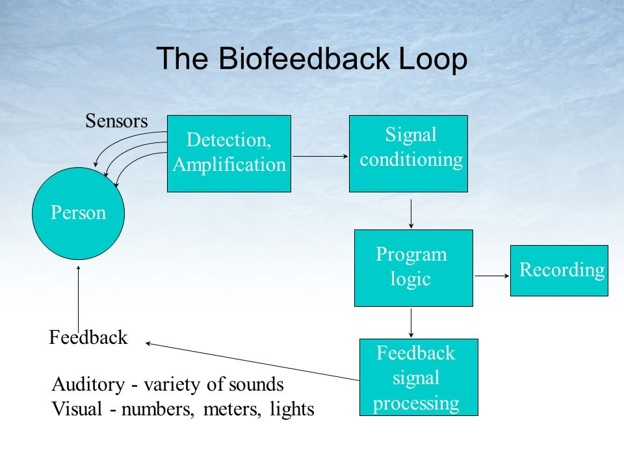
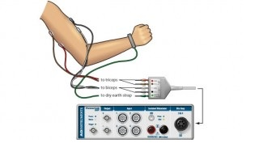

Biofeedback is the process of understanding physiological function using detectors to gain information on activities of specific systems. Processes that can be controlled are muscle tone, brainwaves, heart rate, skin conductance and pain perception.
It helps improve health, performance and physiological changes that is caused by emotions, behavior or thoughts. Individuals learn to control their thinking to support desired physiological changes through the feedbacks from the instruments that measures the changes of the body such as the heart function, brainwaves, breathing, skin temperature and muscle activity. The goal is for individuals to be able to use these techniques without any instruments.
Biofeedback training can improve health issues such as anxiety, asthma, ADHD, constipation, headache, motion sickness, tinnitus, urinary incontinence etc. It is also noninvasive and have a chance to reduce or eliminate medication.
Electromyograph (EMG) is used to detect muscle action potentials from skeletal muscle that are responsible for muscle contraction. The EMG signal can be picked up using either surface electrodes or by inserting wires or needles to the muscle. The input EMG signals are distorted with a lot of noise from surrounding muscles, therefore the voltage fluctuates. The signals have to undergo rectification, filtering and integration to obtain a unified signal to be able to compare with other processed signals. This information will be displayed on a screen fast and accurately. With this real-time audiovisual feedback, individual can learn to invoke positive physical changes like relaxing or tensing specific muscles to reduce pain. 